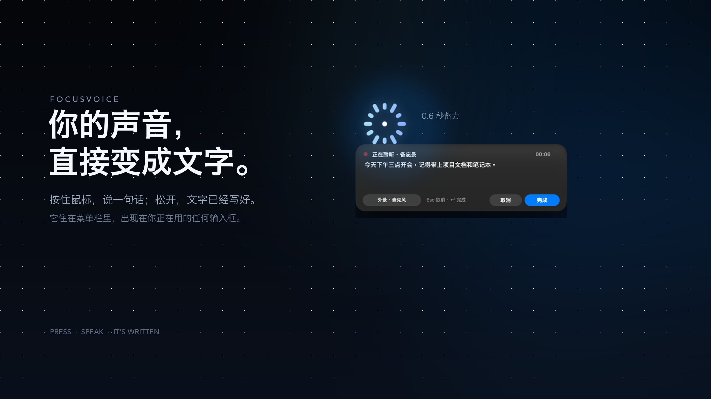
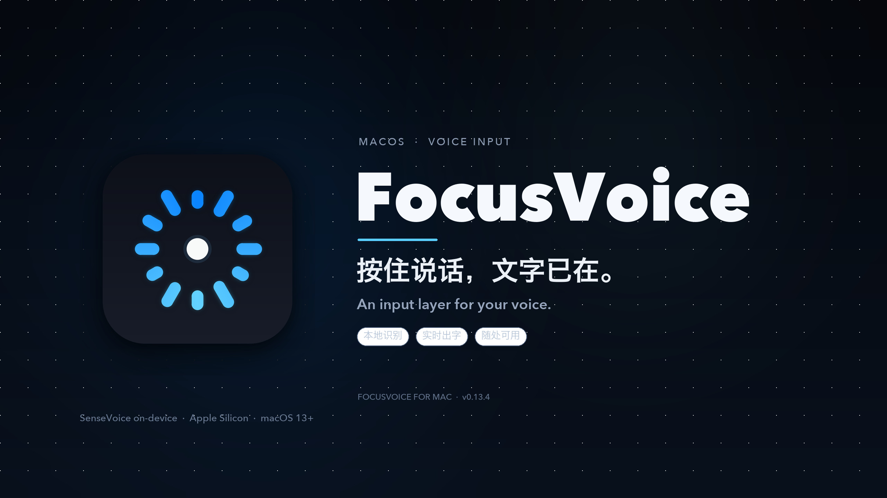
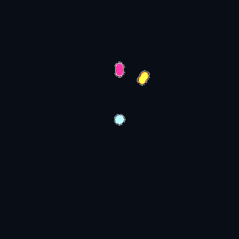
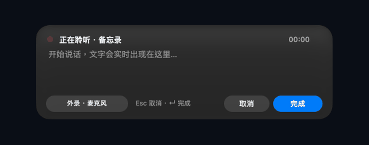
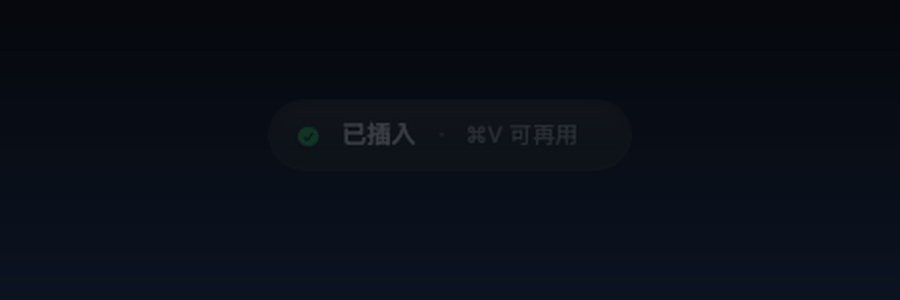
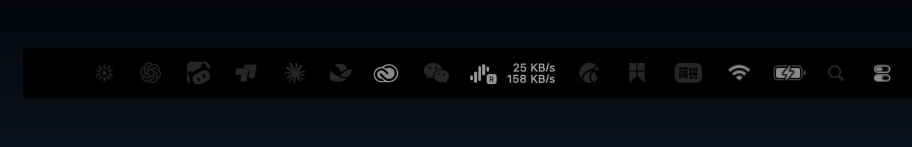
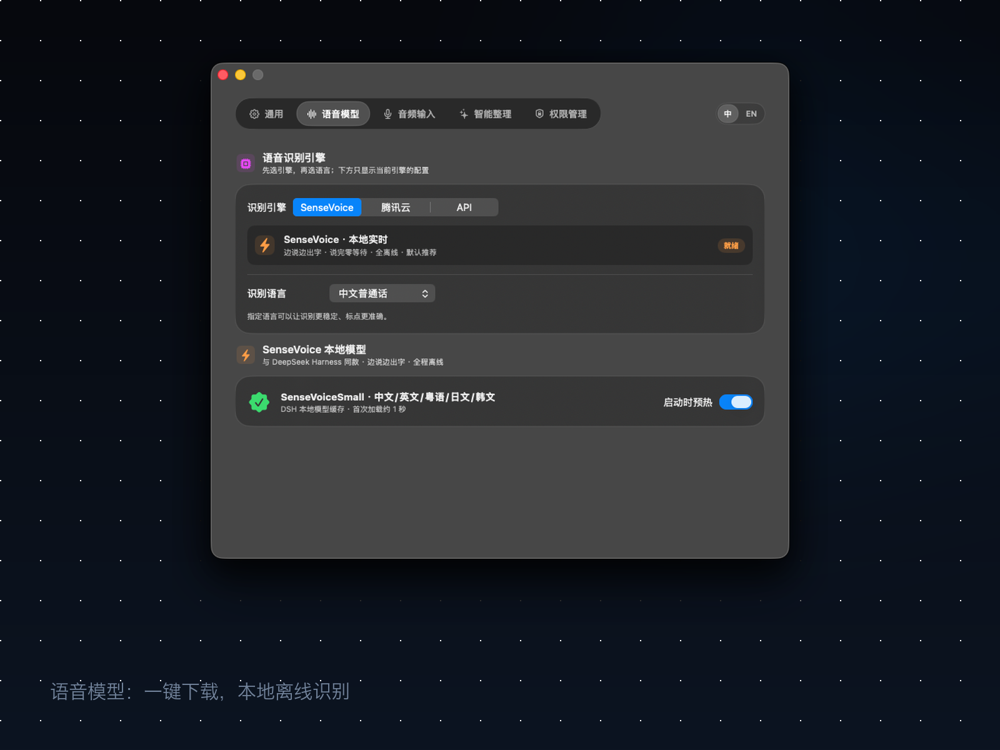
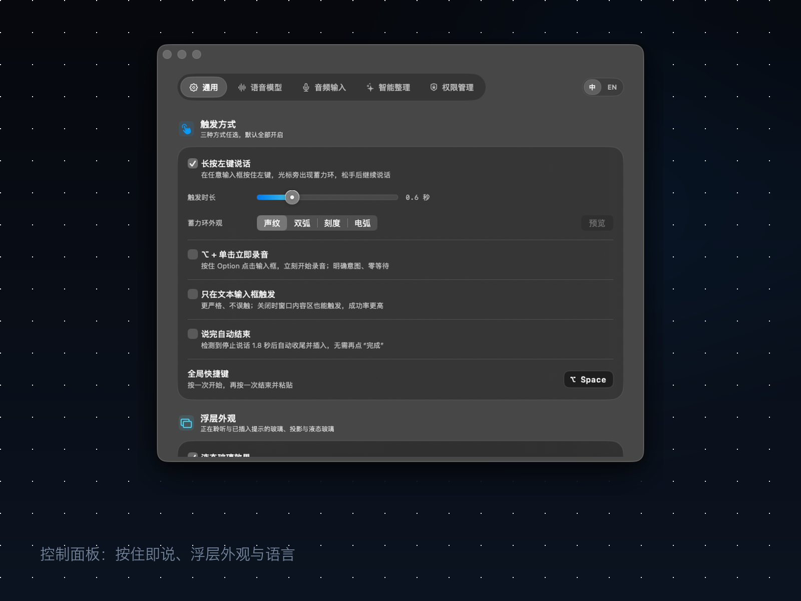

一个住在菜单栏里的语音输入层。按住鼠标，说一句话；松开，文字已经出现在你正在用的地方。


长按左键 0.6 秒，蓄力环在光标旁亮起。松开，继续说。它不弹窗口，不抢焦点，也不要求你切换应用。

SenseVoice 在本机实时转写。话说到一半，文字已经在屏幕上出现；说完，自动写好标点与段落，落到当前输入框。

原生 Liquid Glass 浮层、胶囊提示、菜单栏录制状态。macOS 26 上使用原生 Liquid Glass；更早的系统自动回退到毛玻璃。


13MB 安装包。模型不塞进安装包里。首次使用点一次「下载模型」，之后完全离线。声音默认不离开你的 Mac。

右上角一键切换，不用重启。设置、菜单栏、HUD、提示一起切换。
